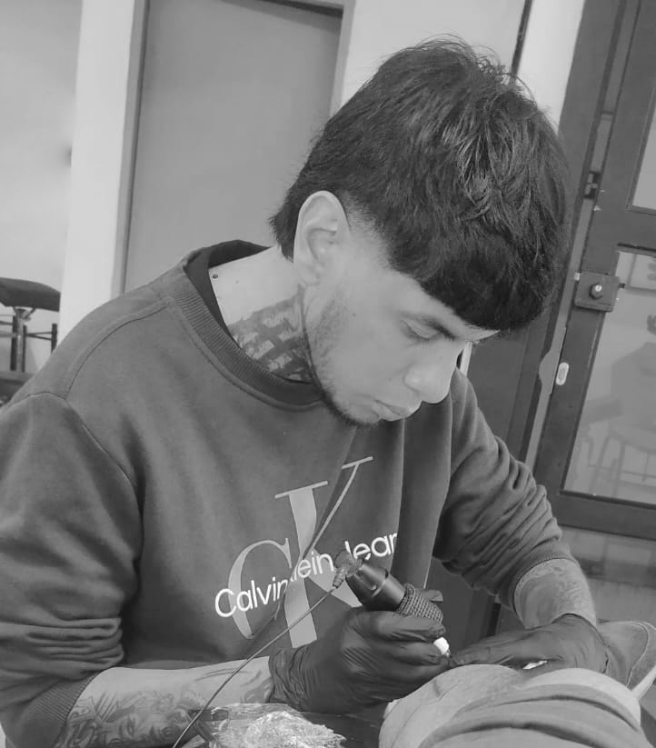
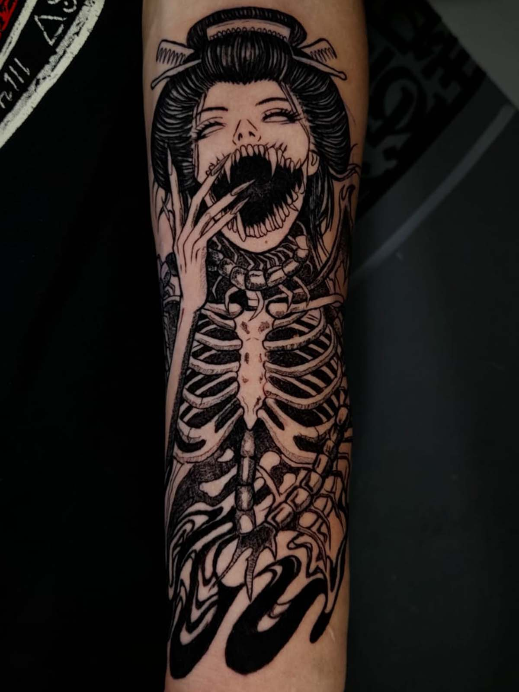
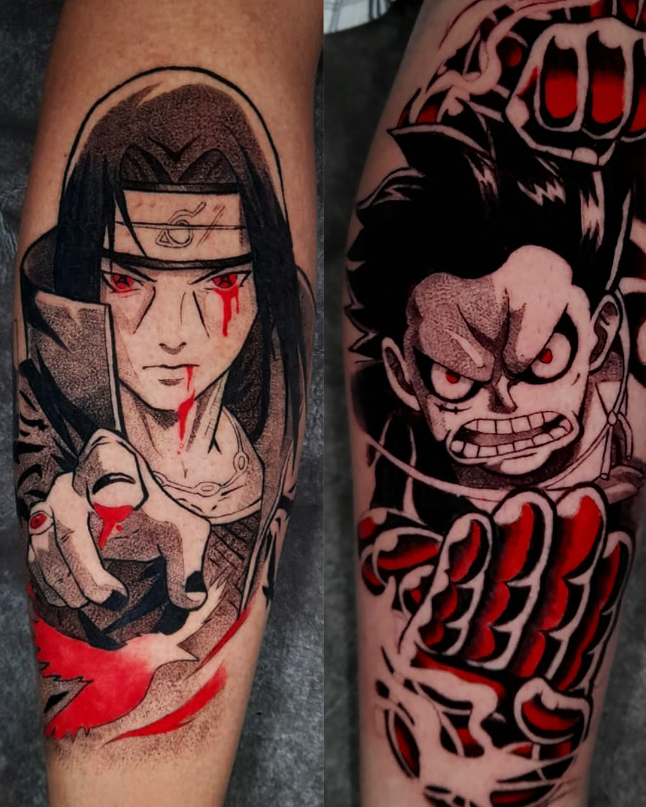
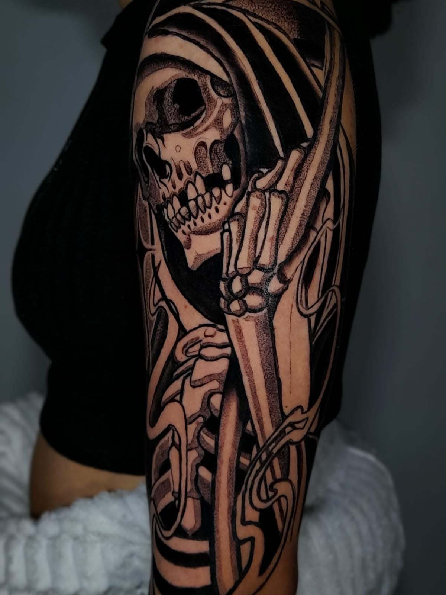
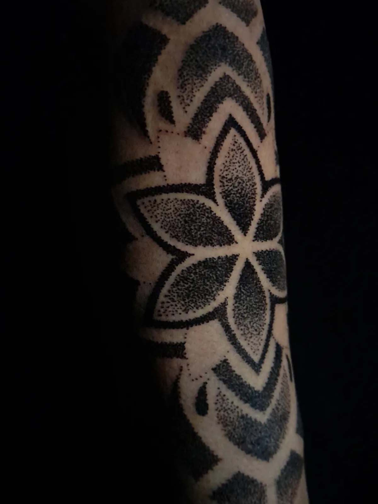

Especialista en tatuajes de alto contraste en Medellín y Envigado.
Agendar CitaUbicación: Medellín / Envigado, Colombia
Soy un artista del tatuaje enfocado en la creación de piezas con alto contraste y precisión técnica. Mi trabajo se especializa en la fusión del Anime, el Blackwork y el estilo Neotradicional, buscando siempre un equilibrio entre la estética visual y la solidez de la línea para garantizar la durabilidad de cada pieza en la piel.
Como ilustrador digital, utilizo herramientas como Procreate, Illustrator y Photoshop para diseñar proyectos personalizados que se adaptan a la anatomía de cada cliente. Mi enfoque actual está centrado en el desarrollo de piezas a gran escala, donde puedo explorar composiciones complejas y dinámicas inspiradas en la cultura pop y el arte oscuro.
Anime Tattoo: Interpretación de personajes con fidelidad al arte original y acabados sólidos.
Blackwork & Linework: Uso técnico de negros profundos y grosores de línea contrastados.
Neotradicional & Ornamental: Diseños de autor con una estructura clásica y elementos modernos.





Jabón neutro y agua fria 2-3 veces al día.
Capa delgada de crema recomendada.
Evitar exposición directa por 15 días.
No piscinas, saunas ni mar por 15 días.
No rascar ni arrancar la piel por ningún motivo.
Usar prendas holgadas de algodón y limpias.